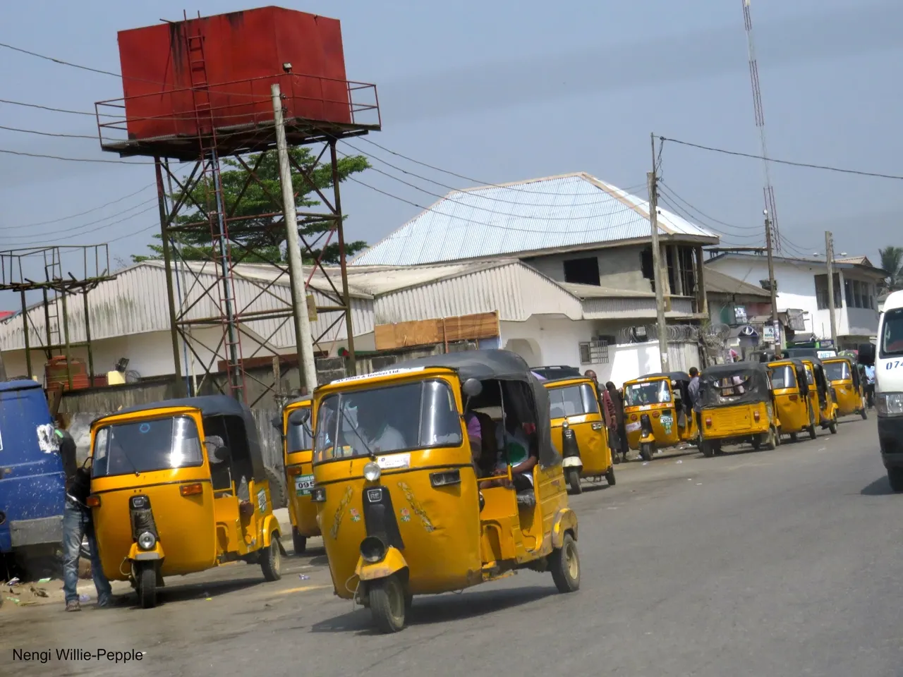

Rumuokoro → Mile 1
How much should you expect to pay for a keke, and should you carry exact change? See the fare table.
Check fares
Fares, routes, safety tips and transport options — all in one place.
Explore transport optionsPort Harcourt is a fast-moving city, and public transport keeps it running. Keke tricycles, mini-buses, shared taxis, ride-hailing apps and riverboats each have their own rules, prices and routes. This guide pulls that knowledge together so that residents, students and first-time visitors can plan a trip without guessing.
Whether you are a student travelling daily from Choba to Trans-Amadi or a visitor trying to reach the airport, start with the overview below, then dig into the details on the Transport and Fares & Routes pages.
Live figures from this guide's transport dataset.
How much should you expect to pay for a keke, and should you carry exact change? See the fare table.
Check faresLearn the busiest travel times and how the rainy season changes your commute.
Read commute tipsWhich option is safest and cheapest for a daily student trip? Compare them side by side.
Compare options